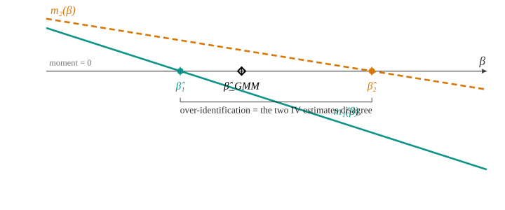

Lecture 11
PIMES/UFPE
Not “\(y=\mathbf{x}'\bbeta+\varepsilon\) with assumptions.” The primitive is a set of valid moment conditions \(\E[\mathbf{g}(\mathbf{d}_i,\btheta_0)]=\bzero\), holding only at the true \(\btheta_0\). The parameter is whatever zeroes the population moments; everything else is how we estimate it from the sample.
Three objects. The data \(\mathbf{d}_i\) — everything observed for unit \(i\) (here \(\mathbf{d}_i=(y_i,\mathbf{x}_i,\mathbf{z}_i)\)). The parameter \(\btheta\) — the \(k\times1\) vector we want. The moment function \(\mathbf{g}(\mathbf{d}_i,\btheta)\) — an \(\ell\times1\) vector built so that its population mean is zero only at the truth, and estimated by its sample average: \[\underbrace{\E[\mathbf{g}(\mathbf{d}_i,\btheta_0)]=\bzero}_{\ell\text{ population moment conditions}} \qquad\xrightarrow{\ \text{analogy principle}\ }\qquad \underbrace{\bar{\mathbf{g}}_n(\btheta)=\frac1n\sum_{i=1}^n\mathbf{g}(\mathbf{d}_i,\btheta)\ \approx\ \bzero}_{\text{sample analogue}} .\]
| estimator | parameter \(\btheta\) | moment \(\mathbf{g}(\mathbf{d}_i,\btheta)\) | count | weight \(\bW\) |
|---|---|---|---|---|
| mean | \(\mu\) | \(y_i-\mu\) | \(\ell=k=1\) | — |
| OLS | \(\bbeta\) | \(\mathbf{x}_i(y_i-\mathbf{x}_i'\bbeta)\) | \(\ell=k\) | — |
| IV (exact) | \(\bbeta\) | \(\mathbf{z}_i(y_i-\mathbf{x}_i'\bbeta),\ \dim\mathbf{z}_i=k\) | \(\ell=k\) | — |
| 2SLS | \(\bbeta\) | \(\mathbf{z}_i(y_i-\mathbf{x}_i'\bbeta),\ \dim\mathbf{z}_i=\ell>k\) | \(\ell>k\) | \((\bZ'\bZ)^{-1}\) |
One equation per instrument — stack them and the matrix form appears: \[\frac1n\sum_{i=1}^n z_{ij}\,(y_i-\mathbf{x}_i'\bbeta)=0,\quad j=1,\dots,\ell \qquad\Longleftrightarrow\qquad \frac1n\,\bZ'(\bY-\bX\bbeta)=\bzero \qquad(\ell\text{ equations},\ k\text{ unknowns}).\] Identification asks whether this system pins \(\bbeta\) down. In population it rearranges to a linear system, \[\E[\mathbf{z}\mathbf{x}']\,\bbeta=\E[\mathbf{z}y],\qquad\text{unique solution}\quad \bbeta_0=(\E[\mathbf{z}\mathbf{x}'])^{-1}\E[\mathbf{z}y]\ \ \textbf{iff}\ \ \rank\E[\mathbf{z}\mathbf{x}']=k .\]
One endogenous regressor (\(k=1\)), two instruments (\(\ell=2\)): each instrument gives its own moment equation \(m_j(\beta)=0\), hence its own just-identified IV estimate \(\hat\beta_j\) — and with \(\ell>k\) they disagree.

\[\boxed{\ J(\btheta)=n\,\bar{\mathbf{g}}_n(\btheta)'\,\bW\,\bar{\mathbf{g}}_n(\btheta)\ },\qquad \bW\succ0, \qquad \hat\btheta_{\text{GMM}}=\argmin_{\btheta} J(\btheta).\]
\(J\) has no closed form in general ⇒ numerical minimization (gancho: a otimização da Aula 13). The linear case (OLS/IV/2SLS) is the exception — \(\bar{\mathbf{g}}_n\) is linear in \(\btheta\), so \(\hat\btheta\) has a closed form (Part II).
Take \(\mathbf{g}(\mathbf{d}_i,\bbeta)=\mathbf{x}_i(y_i-\mathbf{x}_i'\bbeta)\), so \(\ell=k\). The sample moment is the OLS normal equation: \[\bar{\mathbf{g}}_n(\bbeta)=\tfrac1n\bX'(\bY-\bX\bbeta)=\bzero \ \Longleftrightarrow\ \bX'\be=\bzero \ \Longrightarrow\ \hat\btheta_{\text{GMM}}=\bb_{\text{OLS}} .\]
Lecture 4 split OLS into two routes — minimize the sum of squares, or solve the moment \(\bX'\be=\bzero\). GMM is the second route made general: every estimator in this course is “solve (or get as close as possible to) a moment condition.”
Swap the instrument: \(\mathbf{g}=\mathbf{z}_i(y_i-\mathbf{x}_i'\bbeta)\) with \(\ell=k\). Then \[\bar{\mathbf{g}}_n(\bbeta)=\tfrac1n\bZ'(\bY-\bX\bbeta)=\bzero \ \Longrightarrow\ \hat\btheta_{\text{GMM}}=\bb_{\text{IV}}=(\bZ'\bX)^{-1}\bZ'\bY .\]
Now \(\ell>k\) with \(\mathbf{g}=\mathbf{z}_i(y_i-\mathbf{x}_i'\bbeta)\). Minimizing \(J\) with \(\bW=(\bZ'\bZ/n)^{-1}\) gives the closed form \[\hat\btheta_{\text{GMM}}(\bW)=\big(\bX'\bZ\,\bW\,\bZ'\bX\big)^{-1}\bX'\bZ\,\bW\,\bZ'\bY \ \xrightarrow{\ \bW=(\bZ'\bZ)^{-1}\ }\ \bb_{\text{2SLS}}=\big(\bX'\bP_{\bZ}\bX\big)^{-1}\bX'\bP_{\bZ}\bY .\]
| Estimator | moment \(\mathbf{g}(\mathbf{d}_i,\btheta)\) | count | weight \(\bW\) |
|---|---|---|---|
| OLS | \(\mathbf{x}(y-\mathbf{x}'\bbeta)\) | \(\ell=k\) | irrelevant |
| IV | \(\mathbf{z}(y-\mathbf{x}'\bbeta)\) | \(\ell=k\) | irrelevant |
| 2SLS | \(\mathbf{z}(y-\mathbf{x}'\bbeta)\) | \(\ell>k\) | \((\bZ'\bZ)^{-1}\) |
| Efficient GMM | \(\mathbf{z}(y-\mathbf{x}'\bbeta)\) | \(\ell>k\) | \(\bS^{-1}\) (Part III) |
For any fixed \(\bW\succ0\), \(\hat\btheta_{\text{GMM}}(\bW)\) is consistent (the moments are valid); \(\bW\) only changes the asymptotic variance. So: which \(\bW\) makes it smallest?
With \(\bS=\Asyvar\big(\sqrt n\,\bar{\mathbf{g}}_n\big)=\E[\mathbf{g}\mathbf{g}']\) (the long-run variance of the moments), the efficient GMM weight is \(\bW^{\*}=\bS^{-1}\): \[\bS=\sigma^2\bQ_{zz}\ \text{(homosk.)}\ \Rightarrow\ \bW^{\*}=(\sigma^2\bQ_{zz})^{-1}\Rightarrow \textbf{2SLS efficient};\qquad \bS=\E[\mathbf{z}\mathbf{z}'\varepsilon^2]=\bOmega\ \text{(heterosk.)}\ \Rightarrow\ \textbf{2SLS not efficient.}\]
\(\bS\) is unknown, so estimate it: \[\text{Step 1: } \bW=(\bZ'\bZ)^{-1}\ \Rightarrow\ \hat\btheta^{(1)}\ \Rightarrow\ \hat\varepsilon_i;\qquad \hat\bS=\tfrac1n\sum_i \mathbf{z}_i\mathbf{z}_i'\hat\varepsilon_i^2;\qquad \text{Step 2: } \bW=\hat\bS^{-1}\ \Rightarrow\ \hat\btheta^{(2)}.\]
With \(\bG=\E[\partial \mathbf{g}/\partial\btheta']\) (the moment Jacobian — the “bread”): \[\sqrt n\,(\hat\btheta_{\text{GMM}}-\btheta_0)\ \dto\ \Normal\!\Big(\bzero,\ (\bG'\bW\bG)^{-1}\bG'\bW\bS\bW\bG(\bG'\bW\bG)^{-1}\Big) \ \xrightarrow{\ \bW=\bS^{-1}\ }\ \Normal\!\big(\bzero,\ (\bG'\bS^{-1}\bG)^{-1}\big).\]
When \(\ell>k\), the surplus \(\ell-k\) moments are testable. At the efficient GMM estimate, \[J=n\,\bar{\mathbf{g}}_n(\hat\btheta)'\,\hat\bS^{-1}\,\bar{\mathbf{g}}_n(\hat\btheta)\ \dto\ \chi^2_{\ell-k} \quad\text{under } H_0:\ \E[\mathbf{g}(\mathbf{d}_i,\btheta_0)]=\bzero .\]
The Lecture 10 Sargan (\(n R^2\), \(\chi^2_{\ell-k}\)) is exactly this \(J\) under homoskedastic moments. GMM gives its general, robust form — and explains why it is \(\chi^2_{\ell-k}\): \(\ell\) moments minus the \(k\) directions the estimator already forces to zero.
GMM did not fade — it split. Its place today depends entirely on which kind of empirical work you do.
Estimators that solve \(\tfrac1n\sum_i \boldsymbol{\psi}(\mathbf{d}_i,\btheta)=\bzero\) are Z-estimators (\(Z\) for zero). OLS, IV — and, next lecture, MLE (score \(=\bzero\)) — are all of this family; GMM extends it to the over-identified case (\(\ell>k\)).
The thread continues: minimize a criterion (OLS, GMM) or solve a moment / maximize a likelihood (IV, MLE) — all extremum / M-estimators. Lecture 12 names the family and derives MLE inside it.
The original theory is Hansen (1982). In structural work GMM/SMM is standard: demand estimation (Berry et al. 1995), consumption Euler equations (Hansen and Singleton 1982), and the asset-pricing SDF framework. In dynamic panels, Arellano–Bond and system GMM (Arellano and Bond 1991) are powerful but prone to instrument proliferation (Roodman 2009). The design-based retreat reflects the finite-sample cost of the estimated optimal weight (Altonji and Segal 1996) — the Lecture 10 theme, once more.